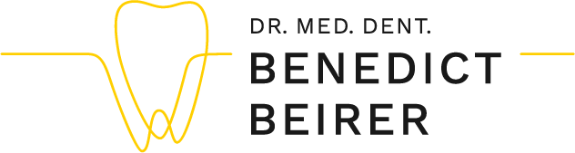
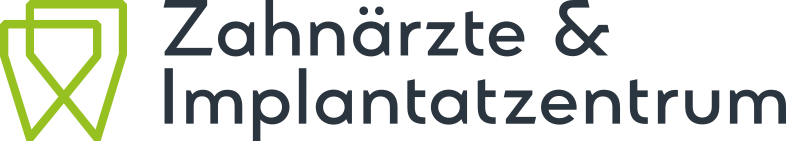
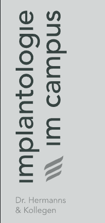
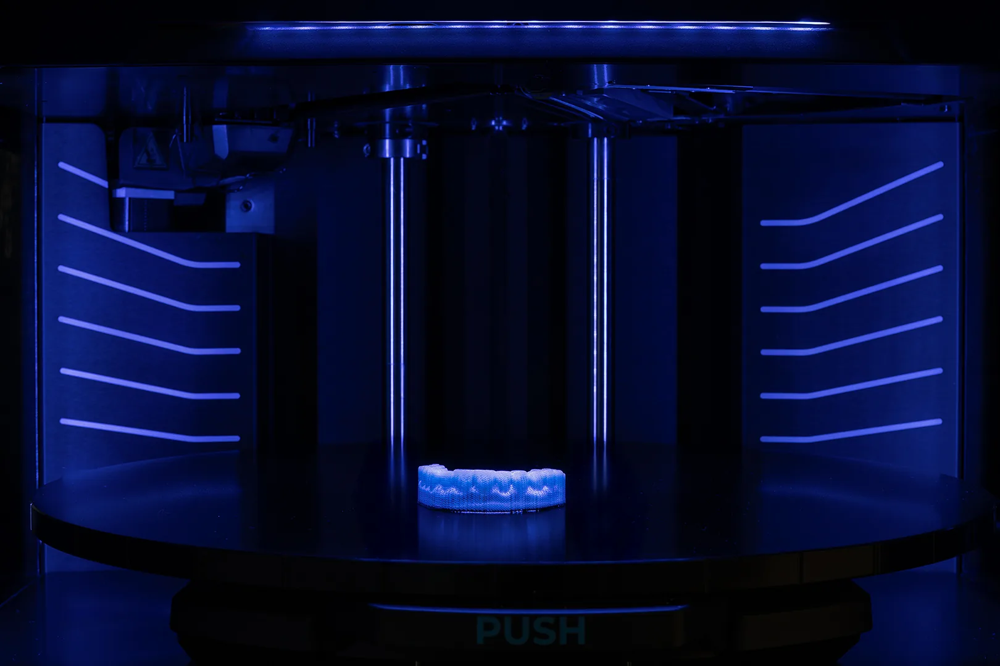
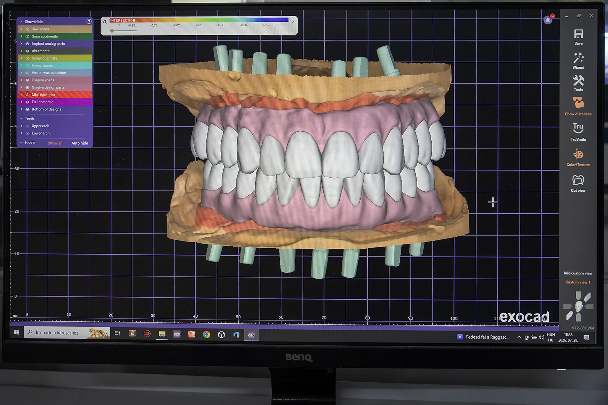
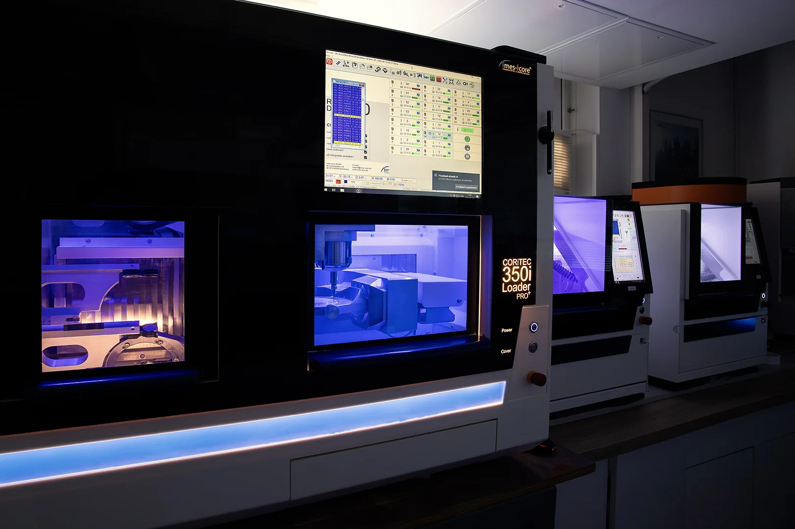
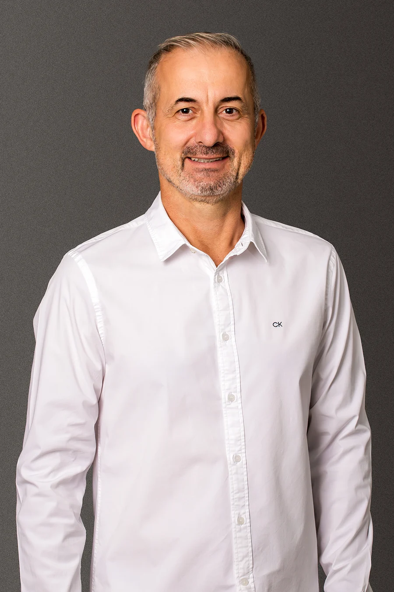
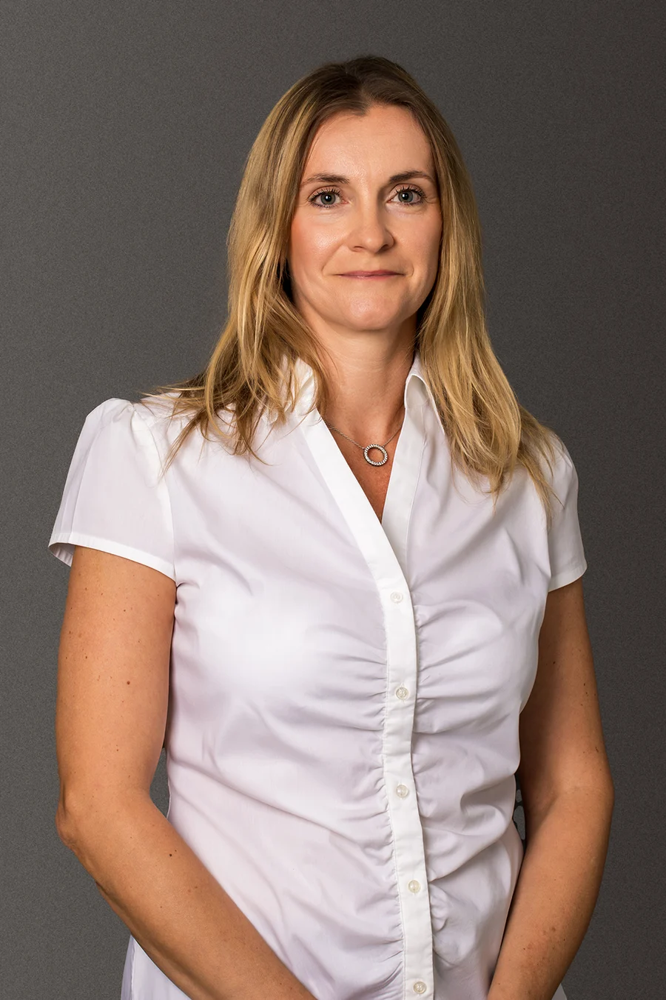

Wir sind seit über einem Jahrzehnt mit der Arbeit zufrieden. Qualität und Ästhetik stimmen zu 100 %.
Die Kommunikation mit dem Labor läuft reibungslos und es gibt selbst bei komplexeren Arbeiten immer ein Top-Ergebnis!
Implantologische und ästhetische Restaurationen – digital im eigenen Labor gefertigt, mit fachlicher Abstimmung auf Deutsch und organisierter internationaler Logistik.
Ein Laborpartner im Ausland funktioniert für eine Praxis in Deutschland oder der Schweiz nur dann gut, wenn nicht allein die zahntechnische Qualität planbar ist. Auch die fachliche Kommunikation, Termine, der digitale Datenaustausch und die Logistik müssen zuverlässig funktionieren.

Bei komplexen Fällen können eine fehlende Information, missverständlich interpretierte Scandaten oder eine verspätete Rückmeldung den gesamten Workflow zum Stillstand bringen.
Die Praxis muss genau wissen, wie die Arbeit ins Labor gelangt, wann sie zurückkommt und wer die Organisation des Transports übernimmt.
Gerade bei implantatgetragenen und vollbogigen Versorgungen muss eindeutig geregelt sein, wer für Planung, Fertigung, Dokumentation, Korrekturen und Garantie verantwortlich ist.
Deshalb sind fachliche Abstimmung, eigene Fertigung und internationale Logistik bei Bridge Dental Bestandteile eines einzigen, klar organisierten Ablaufs.
Von der fachlichen Abstimmung über die digitale Planung und Fertigung bis zur Auslieferung koordinieren wir den gesamten Ablauf. So ist auch bei komplexen Fällen jederzeit klar, an wen Sie sich wenden können, wie weit die Arbeit fortgeschritten ist und wer den nächsten Schritt verantwortet.
Sie stimmen sich nicht mit einem allgemeinen Kundenservice ab. Ein fest zugeordneter, deutschsprachiger Zahntechniker begleitet Ihren Fall, prüft die eingehenden Daten und steht Ihnen bei Bedarf für eine digitale Fallberatung zur Verfügung.
Digitale Planung, CNC-Fräsen und 3D-Druck erfolgen in unserem eigenen Labor. Der Fertigungsprozess ist dokumentiert und rückverfolgbar, sodass die Verantwortung nicht auf mehrere externe Beteiligte verteilt ist.
Den Hin- und Rückversand zwischen unserem Labor und Praxen in Deutschland und der Schweiz organisieren wir für Sie. Ihre Praxis benötigt keinen eigenen Logistikprozess, um mit uns zusammenzuarbeiten.
Bei der Wahl eines langfristigen Laborpartners sind fachlicher Hintergrund, ein stabiles Team und klar übernommene Verantwortung mindestens so wichtig wie die eingesetzte Technologie.
Bridge Dental ist Partner der Ivoclar Academy in Ungarn und profitiert von einem internationalen fachlichen und Fortbildungsnetzwerk.
Fachliche Auszeichnung für die zahntechnische Arbeit von Bridge Dental.
Planung, Fertigung und Qualitätskontrolle erfolgen durch unser eigenes Team und unter interner fachlicher Kontrolle.
Fünf Jahre Material- und Konstruktionsgarantie bei sachgerechter klinischer Anwendung.

Erfahrungen unserer Partnerpraxen in Deutschland und Österreich aus der täglichen Zusammenarbeit mit Bridge Dental.

Wir sind seit über einem Jahrzehnt mit der Arbeit zufrieden. Qualität und Ästhetik stimmen zu 100 %.
Die Kommunikation mit dem Labor läuft reibungslos und es gibt selbst bei komplexeren Arbeiten immer ein Top-Ergebnis!
Super zuverlässiges Labor mit konstant hoher Qualität. Die Arbeiten passen hervorragend, werden pünktlich geliefert und sind ästhetisch einfach spitze.
Vielen Dank für die professionelle Zusammenarbeit!

Wir arbeiten sehr erfolgreich mit dem zahntechnischen Labor Bridge Dental aus Budapest zusammen.
Besonders hervorzuheben sind die hervorragenden Zirkonoxid- und Keramikarbeiten, die durch hohe Passgenauigkeit und Ästhetik überzeugen.
Die Kommunikation ist stets schnell und unkompliziert, und auch die Liefer- sowie Anfertigungszeiten sind angenehm kurz.
Die Zusammenarbeit ist jederzeit zuverlässig und professionell. Wir können Bridge Dental uneingeschränkt weiterempfehlen und schätzen das Labor als langfristigen Partner sehr.

Wir arbeiten sehr gerne mit dem zahntechnischen Labor Bridge Dental zusammen und schätzen die Zusammenarbeit sehr.
Besonders hervorheben möchten wir die zuverlässige und professionelle Arbeitsweise des Labors.
Die Kommunikation ist stets unkompliziert, schnell und lösungsorientiert. Ein weiterer wichtiger Grund für die Zusammenarbeit ist die stets hohe Qualität der zahntechnischen Arbeiten.
Auf individuelle Wünsche wird flexibel eingegangen, was die Zusammenarbeit für unser Team sehr angenehm macht.
Auch wirtschaftlich ist die Kooperation für uns sehr vorteilhaft. Durch das sehr gute Preis-Leistungs-Verhältnis und die verlässlichen Lieferzeiten können wir unseren Patienten hochwertige Versorgungen anbieten und gleichzeitig effizient planen.
Wir freuen uns auf die weitere Zusammenarbeit und können das Dentallabor uneingeschränkt weiterempfehlen.
Die Wahl eines neuen Laborpartners ist eine Vertrauensentscheidung. Deshalb erwarten wir nicht, dass Sie sich bereits nach dem ersten Gespräch langfristig festlegen.
Im achtwöchigen Pilotprojekt erleben Sie anhand von drei bis fünf realen Fällen, wie fachliche Kommunikation, digitale Planung, Fertigung, Problemlösung und internationale Logistik bei uns zusammenspielen.
Tritt während des Pilotprojekts aufgrund eines nachweisbaren Laborfehlers eine Situation ein, die einen erneuten Patiententermin erforderlich macht, korrigieren oder fertigen wir die Arbeit neu. Zusätzlich erhalten Sie eine Gutschrift in Höhe von 150 € als Ausgleich für den zusätzlichen Behandlungsaufwand, die mit der nächsten technischen Rechnung verrechnet wird.
Diese Zusage gilt ausschließlich für Arbeiten aus dem achtwöchigen Pilotprojekt und gemäß den Pilotbedingungen.
Unsere Fachgebiete reichen von der komplexen Implantologie bis zur digitalen Ästhetik.

Die All-on-X-Lösungen von Bridge Dental unterstützen die Rehabilitation des gesamten Zahnbogens mit digitaler Planung und präziser Laborarbeit für ein planbares, ästhetisches und stabiles Endergebnis.
Mehr erfahren
Implantatgetragene Zirkonoxidrestaurationen von Bridge Dental unterstützen Praxen mit digitaler Präzision und modernen Multilayer-Materialien. Unsere monolithischen Full-Contour-Lösungen verbinden natürliche Ästhetik, präzise Passung und langfristige Stabilität.
Mehr erfahren
Digitaler Zahnersatz vereint die Vorteile moderner CAD/CAM-Konstruktion und präzisen 3D-Drucks mit traditioneller zahntechnischer Kompetenz. So entsteht planbarer, ästhetischer und langfristig zuverlässiger herausnehmbarer Zahnersatz.
Mehr erfahren
Der Wert des digitalen Workflows in unserem Labor liegt im präzisen Informationsaustausch, der durchdachten Planung und der koordinierten Zusammenarbeit zwischen Praxis und Labor. Jeder Schritt trägt dazu bei, Restaurationen planbar, präzise und auf hohem ästhetischem Niveau zu fertigen.
Mehr erfahren
Metallfreie Keramikrestaurationen vereinen natürliche Ästhetik, präzise Passung und langfristige Zuverlässigkeit. Der digitale Workflow, hochwertige Keramikmaterialien und die individuelle Charakterisierung ermöglichen eine harmonische Integration in das natürliche Gebiss.
Mehr erfahren
Hochpräzise CAD/CAM-Technologie ermöglicht die präzise und reproduzierbare Fertigung digital konstruierter Restaurationen. Der kontrollierte Workflow unterstützt gleichbleibende Qualität, präzise Passung und planbare Ergebnisse.
Mehr erfahrenVom ersten Gespräch über die Pilotphase bis zur langfristigen Partnerschaft arbeiten wir nach einem klar definierten Ablauf.
Wir lernen die Arbeitsschwerpunkte Ihrer Praxis, den digitalen Workflow, das Scansystem und die Anforderungen an die Logistik kennen. Gemeinsam wählen wir die ersten Pilotfälle aus.
Wir beginnen mit drei bis fünf ausgewählten Fällen. So erleben Sie Kommunikation, Planung, Fertigungsqualität und Logistik im realen Arbeitsablauf.
Wir prüfen die eingehenden digitalen Daten und alle erforderlichen Informationen. Bei komplexen Fällen sind vor Fertigungsbeginn eine direkte fachliche Abstimmung und eine digitale Fallberatung möglich.
Digitale Planung und Fertigung erfolgen in unserem eigenen Labor. Die Arbeit durchläuft an festgelegten Punkten des Fertigungsprozesses fachliche Kontrollen.
Nach der Qualitätskontrolle senden wir die fertige Arbeit über unsere organisierte internationale Logistik zurück. Die Erfahrungen aus den ersten Fällen werten wir gemeinsam aus und schaffen damit die Grundlage für die langfristige Zusammenarbeit.
Am besten arbeiten wir mit Praxen zusammen, für die das Dentallabor nicht nur Lieferant, sondern aktiver fachlicher Partner im klinischen Workflow ist.
Für Teams, die regelmäßig implantatgetragene Kronen, Brücken oder komplexe vollbogige Rehabilitationen versorgen.
Für Praxen, in denen Intraoralscans, digitaler Datenaustausch und die Vorabstimmung von Fällen zum täglichen Workflow gehören.
Wenn es wichtig ist, dass das Labor die eingehenden Daten vor der Fertigung prüft und sich bei Bedarf fachlich mit der Praxis abstimmt.
Wenn neben zahntechnischer Qualität auch Kommunikation, planbare Abläufe und zuverlässige Logistik entscheidend sind.
Für komplexere Implantatarbeiten bieten wir ein achtwöchiges Pilotprojekt mit drei bis fünf realen Fällen an.
So entscheiden Sie nicht auf Grundlage einer einzigen Probearbeit: Sie erleben fachliche Kommunikation, Planungsablauf, Fertigungsqualität, Problemlösung und Logistik anhand realer Fälle.
Wir arbeiten mit Exocad-basierten Planungssystemen und verarbeiten Dateien aus den gängigen offenen digitalen Workflows, unter anderem von iTero, TRIOS, Medit und Shining.
Zu Beginn der Zusammenarbeit unterstützen wir Ihre Praxis außerdem bei der Einrichtung des digitalen Datentransfers.
Unser Labor befindet sich in Budapest, Ungarn. Die Adresse unseres Zentrums lautet: 1106 Budapest, Fehér út 10. Gebäude 26, 2. Stock.
Für implantatgetragene Arbeiten gewähren wir bei sachgerechter klinischer Anwendung fünf Jahre Material- und Konstruktionsgarantie. Der Fertigungsprozess ist dokumentiert und rückverfolgbar.
Führt während des Pilotzeitraums ein nachweisbarer Laborfehler zu einem Passungsproblem und muss der Patient deshalb erneut in die Praxis kommen, korrigieren oder fertigen wir die Arbeit neu. Zusätzlich erhalten Sie eine Gutschrift in Höhe von 150 € als Ausgleich für den zusätzlichen Behandlungsaufwand, die mit der technischen Gebühr der nächsten Arbeit verrechnet wird.
Diese Zusage gilt ausschließlich für Arbeiten aus dem Pilotzeitraum und gemäß den Pilotbedingungen.
Nicht von der Garantie umfasst sind:
Wir organisieren den kompletten Hin- und Rückversand. Wird die Abholung bis 14 Uhr angemeldet, veranlassen wir den Transport; die Praxis muss die Arbeit lediglich verpacken und den per E-Mail zugesandten Versandbeleg ausdrucken.
Wir versenden mit FedEx Express. Eine am Montag aufgegebene Arbeit trifft in der Regel bis Dienstagmittag in unserem Budapester Labor ein.
Ja. Ihre Praxis stimmt sich mit einem fest zugeordneten, deutschsprachigen Zahntechniker ab und nicht lediglich über die allgemeine Kontaktadresse des Labors. Bei komplexen Fällen bieten wir außerdem eine digitale Online-Fallberatung an.


Wenn Ihre Praxis auf der Suche nach einem zuverlässigen, gut organisierten Laborpartner für komplexe Arbeiten ist, kann das erste Beratungsgespräch ein guter Ausgangspunkt sein.
Erstgespräch anfragen